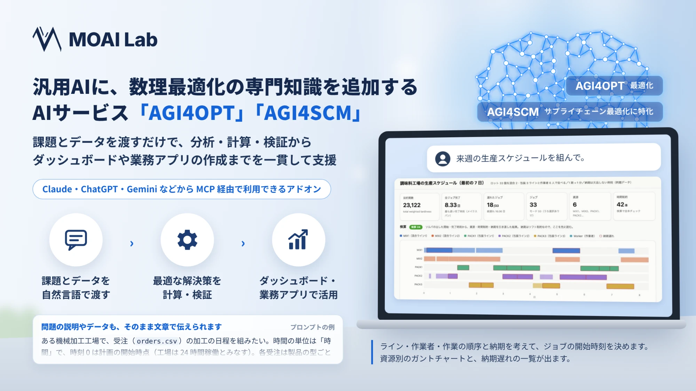

株式会社MOAI Lab（本社：東京都江東区、代表取締役：野々部宏司、以下「MOAI Lab」）は、AIと数理最適化・組合せ最適化の技術を用いて、企業活動での複雑な課題の解決と意思決定の最適化を実現することを設立の趣旨とする専門家集団です。
この度、幅広い業務課題に対応するエージェント型AIサービス「AGI4OPT」と、サプライチェーン領域に特化した「AGI4SCM」の提供を開始しました。
利用者が課題とデータを提示するだけで、汎用AIに最適化の専門知識をアドオンとして追加したAIが、データの整理・分析から最適な解決案の計算・検証、さらに結果をまとめた画面や業務アプリの作成まで、実務に必要な全工程を一貫して支援する、画期的なサービスです。
製品サイト
AGI4OPT：https://agi.moai-lab.jp/agi4opt/
AGI4SCM：https://agi.moai-lab.jp/agi4scm/
従来の汎用AIとAGI4OPTやAGI4SCMの違い
AGI4OPTとAGI4SCMは、ChatGPTやClaudeなどの汎用AIに専門知識を追加する、アドオンの役割を果たします。特長は、最適化（AGI4OPT）やサプライチェーン（AGI4SCM）に関する専門的な知見をスキルとして組み込み、課題の構造や規模に応じた手法の選択と自動化を進めることで、従来のシステム開発の壁を圧倒的に下げた点です。さらに、汎用AIの特長である自然言語でのやり取りをそのまま課題解決に生かせます。以下の表に汎用AIを単独で利用する場合との違いをまとめます。
| 比較項目 | 汎用AIを単独で利用する場合 | AGI4OPTやAGI4SCMの場合 |
|---|---|---|
| 専門知識 | 利用者が必要な知識や手順を補いながら進める必要がある | 最適化の専門知識を組み込んだAIが課題解決を支援 |
| モデル・解法の選択 | 課題に適したモデルや解法を利用者が検討する必要がある | 課題の構造や規模に応じたモデル・解法の選択を支援 |
| 比較・検証 | 利用者が比較方法や評価基準の設計、結果の確認を別途行う必要がある | 複数の解決案を共通の評価基準で比較し、制約条件などを検証 |
| 結果の活用 | 文章やプログラムなどの出力を、別途業務で使える形にする必要がある | ダッシュボードや業務アプリとしての出力を支援 |
| 組織での活用 | 個々の利用者の作業にとどまりやすい | 作成したアプリケーションや利用手順を組織内で共有可能 |
| 開発期間 | 長期間を要する | 短期間で済む |
開発の背景：最適化の専門知識が、実務導入の壁に
企業の生産・物流・在庫・人員配置などの計画業務では、多数の条件や制約を考慮しながら、限られた経営資源をどのように配分するかを決める必要があります。こうした意思決定には数理最適化が有効ですが、実務への適用には、業務要件を適切な数理モデルに落とし込む力に加え、問題の構造や規模に応じた解法・ソルバーの選定、得られた解の妥当性を確認するための専門知識が求められます。
従来、企業が最適化を導入するには、専門家を含む体制で個別システムを開発するか、既製の業務パッケージやSaaSを導入する方法が一般的でした。個別開発は自社固有の業務要件に対応しやすい一方、開発期間や費用、専門人材の確保が課題となります。これに対し、既製サービスは導入しやすい反面、企業ごとに異なる制約や運用ルールへの対応に限界が生じる場合があります。
生成AIの進歩により、最適化モデルやプログラムの作成をAIに支援させることは容易になりつつあります。しかし、実務の最適化では、コードを生成するだけでは十分ではありません。問題の規模や構造に適したモデル・解法を選び、複数の手法を比較し、制約条件を満たしているかを検証することが重要です。また、実際の業務で活用するには、データ連携や分析、結果の可視化、利用者向けのアプリケーションも必要になります。
AGI4OPTおよびAGI4SCMは、こうした最適化の研究・実務で培われた30年以上の知見を、AIが利用できる専門的なスキルとして実装したサービスです。最適化の専門家が担ってきた判断や作業をAIが支援することで、専門人材の確保や個別開発にかかる負担を抑えながら、企業固有の複雑な課題に取り組める環境を提供します。
AGI4OPT：幅広い業務課題に対応する最適化AI
AGI4OPTは、業種や業務領域を限定せず、幅広い最適化課題に対応するエージェント型AIサービスです。
利用者は、解決したい問題や条件を自然言語で説明し、関連データを提供することで、最適化の専門家が行う一連の作業をAIに依頼できます。
AIは、問題の構造や規模に応じて最適化モデルを構築し、強い定式化、部分問題への分解、列生成法などの解法や、商用・オープンソースを含む複数のソルバーを使い分けます。必要に応じて複数の手法で計算を行い、共通の評価基準で結果を比較します。さらに、検算によって制約条件などを確認し、推奨する解法や結果の評価とともに、ダッシュボードとして提示します。
単に最適化コードの作成を効率化するのではなく、従来は専門家への相談や個別開発が必要だった高度な最適化課題について、利用者自身が検討・検証を進められることを目指しています。
AGI4SCM：サプライチェーン領域に特化した最適化AI
AGI4SCMは、AGI4OPTの技術を基盤に、サプライチェーン領域の課題に特化したエージェント型AIサービスです。
需要予測、在庫管理、生産計画、物流ネットワーク、配送計画など、サプライチェーンで頻繁に発生する課題に対応するモデリングやアプリケーションのテンプレートを備え、分析から最適化、結果の可視化までを効率的に進められます。
主な対応領域
- 需要予測・需要分析
- 在庫分類・在庫最適化・発注方策
- サプライチェーンネットワーク最適化
- 生産計画・生産ロット最適化
- 生産スケジューリング
- 輸送・配送計画最適化
- 人員配置・勤務表作成
- サプライチェーンの途絶リスク分析
これらの機能は個別に利用できるほか、需要予測と在庫最適化、生産計画とスケジューリングなど、複数の課題を組み合わせて利用することも可能です。
既存のAI環境と連携、業務アプリの作成・共有にも対応
AGI4OPTおよびAGI4SCMは、新たなAIツールへの全面的な切り替えを前提とせず、企業が利用しているAI環境と連携して活用できる形で提供します。
MCP（Model Context Protocol）に対応し、Claude、ChatGPT、GeminiなどのAIから、最適化に関する専門スキルを呼び出して利用できます。また、構成に応じて、オンプレミスLLMとの連携にも対応します。
- アシスタント（MCP提供）
既存のAI環境にMCPで接続し、最適化の専門スキルを追加する提供形態です。普段使用しているAIに課題やデータを伝えるだけで、現在のAI環境を活かしたまま最適化の機能を使えます。 - クラウド提供
最適化の実行に加え、業務アプリの作成・共有・社内展開までを支援する提供形態です。複数の機能を組み合わせたWebアプリケーションをAIへの指示で作成でき、画面や機能の調整にも対応します。作成したアプリケーションを組織内で共有することで、専門知識を持つ担当者だけでなく、現場の利用者も最適化の結果を業務で活用できる環境を構築できます。
企業のセキュリティ要件に応じた導入構成
企業でAIを業務利用する際には、データの取り扱いやアクセス権限、アプリケーションの配布・運用方法など、セキュリティとガバナンスへの配慮が欠かせません。
MOAI Labでは、お客様のセキュリティ要件や運用方針に応じて、クラウドを活用する構成から、お客様環境内で開発・運用する構成まで、複数の導入形態をご提案します。
導入検証から本番導入・運用まで支援
MOAI Labでは、最適化の導入を検討する企業向けに、短期間で最適化の適用可能性や期待効果を検証するPoCサービス「MOAI Bootcamp」を提供しています。
また、課題の整理、データの確認、PoCの実施、本番システムの開発・導入、運用まで、お客様の状況に応じて専門家が支援します。AIを導入すること自体を目的とせず、実際の業務課題に対して最適化がどのような効果を生み出すかを確認しながら、実務への適用を進めます。
MOAI Labの製品・サービスにおける位置づけ
MOAI Labでは、最適化技術の基盤からAIエージェント、業務アプリまで、企業の多様なニーズに応じた製品・サービスを提供しています。
- MOAI SaaS
MOAI Platform、AGI4OPT、AGI4SCMを基盤として開発したアプリケーションをベースに、企業ごとの業務課題や要件に応じてカスタマイズし、提供するサービスです。 - AGI4OPTとAGI4SCM
MOAI Platformに搭載された最適化ソルバーやアルゴリズムなどを、自然言語による指示を通じて利用しやすくするエージェント型AI／開発環境です。データの統合・分析、需要予測、最適化モデルの構築・計算・検証から、ダッシュボードや業務アプリの作成までを支援します。 - MOAI Platform
最適化ソルバーや最先端（SOTA）アルゴリズムなど、300以上のコアモジュールを備えた最適化技術基盤です。AGI4OPTやAGI4SCMの技術的な基盤として活用されるほか、個別の最適化システム開発にも利用できます。
また、MOAI Platformを構成する最適化ソルバーや関連製品については、個別販売にも対応しています。対応する技術領域は、線形・混合整数最適化、非線形最適化、大域的最適化、制約最適化、配送最適化、スケジューリング最適化など多岐にわたります。
株式会社MOAI Lab について
株式会社MOAI Labは、数理最適化・組合せ最適化の研究者およびエンジニアを中心に設立された、東京海洋大学発ベンチャーです。数理最適化（Mathematical Optimization）とAI（Artificial Intelligence）を融合した独自技術「MOAI Technology」を通じて、生産・物流・サプライチェーンをはじめ、エネルギー、人員計画、防災計画など、多様な領域における複雑な意思決定の最適化を支援しています。
| 会社名 | 株式会社MOAI Lab |
|---|---|
| 所在地 | 東京都江東区三好1-8-3 越前屋ビル 2F |
| 代表者 | 代表取締役 野々部宏司 |
| 設立 | 2024年11月 |
| 公式サイト | https://www.moai-lab.jp/ |
| 製品サイト | https://agi.moai-lab.jp/agi4opt/ ／ https://agi.moai-lab.jp/agi4scm/ |
| 事業内容 | MOAI Platform、AGI4OPT、AGI4SCM、MOAI SaaSの提供、AMPLの国内総代理店、MOAI Bootcamp、DX・AI導入コンサルティング |
本件に関するお問い合わせ先
株式会社MOAI Lab お問い合わせフォーム
https://www.moai-lab.jp/about/contact-us
※本資料に記載の製品・サービスの仕様、提供条件、導入構成は、予告なく変更となる場合があります。
以上